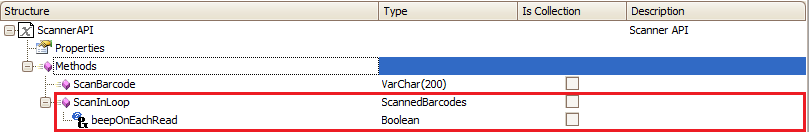
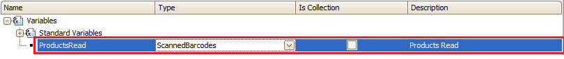
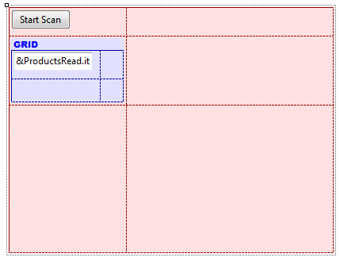

This article is a short guide to show how to configure and use this method. As you can see the ScanInLoop method returns an SDT of ScannedBarcodes, and receives a Boolean indicating if a beep will be played on each read.  In this example we will use the ScanInLoop method to load a grid with all the scanned codes (this is one way to use the information obtained, there are many ways to use it). We will use a Panel object with a variable defined as follows:  Then we need to add the variable to the layout and add a button to start the scanning, for example, as follows:  Finally we need to use this method, so we only need to create a new Event, for the button "Start Scan", as the following (note that we defined the beepOnEachRead = True so a beep sound will be played each time a code is scanned).
Event 'Start Scan'
Composite
&ProductsRead = Scanner.ScanInLoop(True)
refresh
EndComposite
EndEvent
Done. When scanning the codes it will automatically open the scan application and save each code it reads, when the scan is stopped the application will return to the Panel for Smart Devices we have created and all the scanned codes will be displayed . Notes
|
| Backlinks |
| Scanner external object |